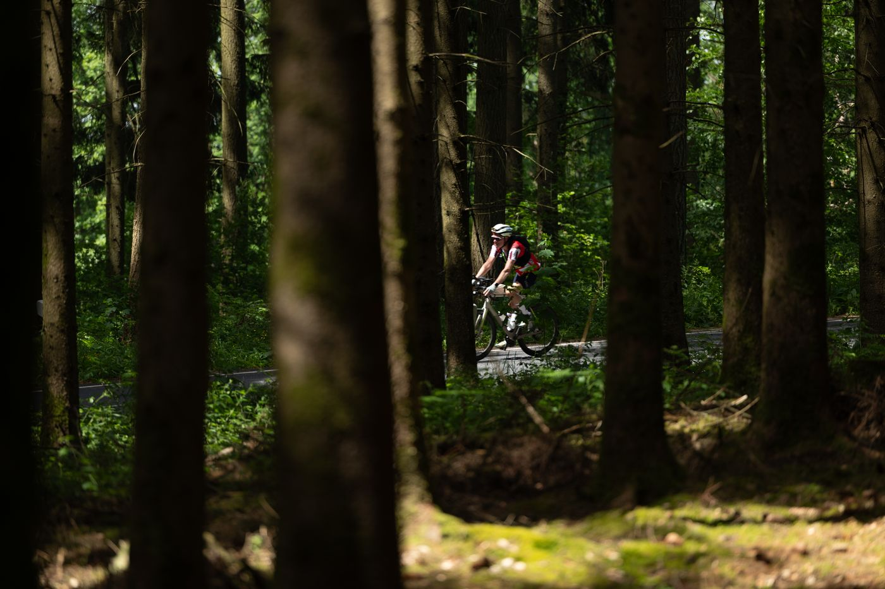
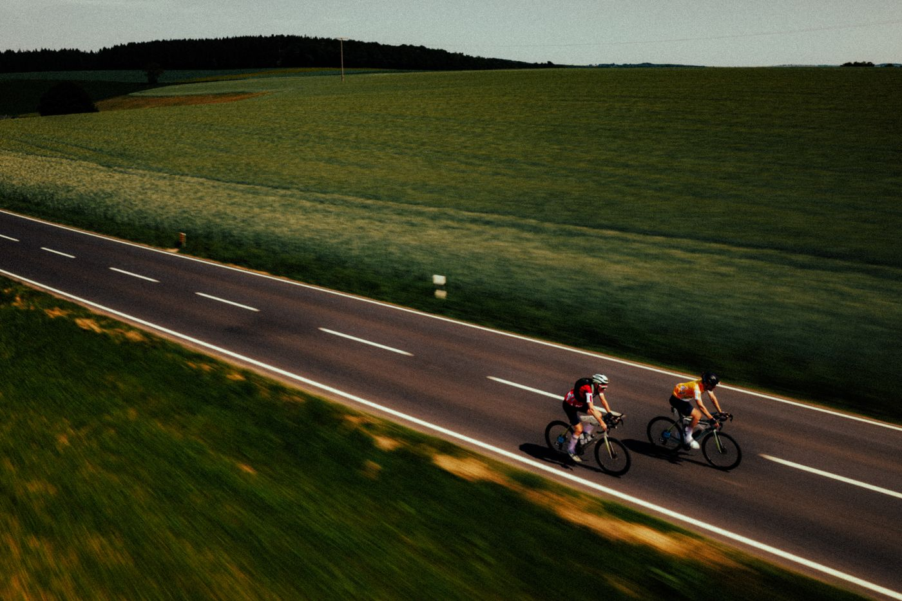

Jour 1 — La Clusaz → Chambéry
La mise en jambes idéale. Depuis La Clusaz, trente kilomètres de descente le long du Fier mènent à Annecy et à son lac, dernier moment de plaine avant plusieurs jours de montagne. La rive ouest du lac conduit au pied des Bauges, que l'on traverse du nord au sud : le col de Leschaux d'abord, régulier et ombragé, puis les villages de Lescheraines et du Châtelard au cœur du Parc naturel régional, avant le col de Plainpalais et ses alpages. La longue descente par La Féclaz débouche sur Chambéry, point bas de la journée à 278 m.
Étape courte à dessein : elle absorbe la logistique du départ et laisse des réserves intactes pour les trois jours qui suivent.

